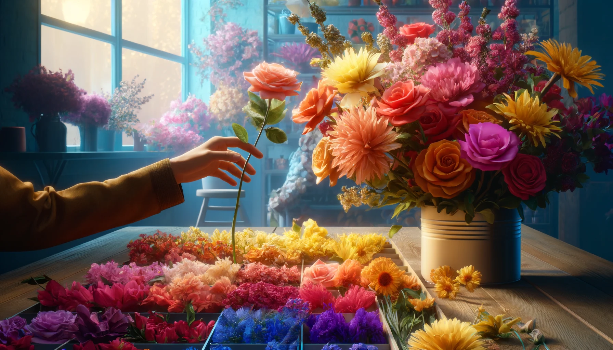
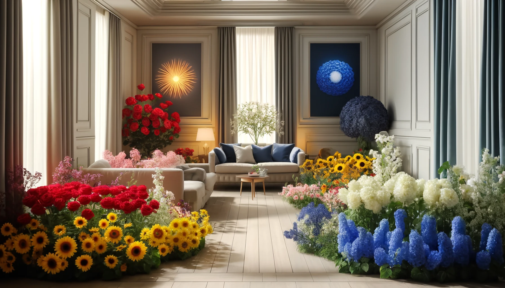
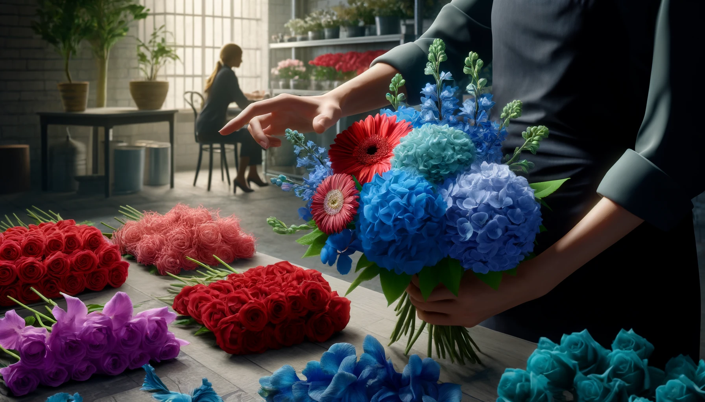

Color therapy, also known as chromotherapy, is an intriguing approach to enhancing mood and emotional well-being through the use of colors. In the context of selecting flowers for their colors and emotional impacts, you can apply principles of color therapy to create an environment that influences mood positively. Here are three steps to choose flowers based on their colors to set a specific mood

Identify the Desired Mood or Emotional Effect
Before selecting flowers, decide on the mood or feeling you want to evoke in the space where the flowers will be displayed. Different colors can elicit various emotional responses. For example, red is known to energize and stimulate, making it perfect for areas where you want to foster excitement or passion. Yellow, being bright and cheerful, is ideal for spaces where you wish to evoke happiness and optimism. Blue has a calming effect, suitable for creating a tranquil and peaceful atmosphere. Understanding these emotional impacts helps in choosing the right color for the desired mood.

Select Flowers Based on Their Colors and Symbolic Meanings
After determining the desired emotional effect, choose flowers that match the chosen color and mood. It’s essential to consider both the colors and the traditional meanings of the flowers. For example, to create a calming environment, you might choose blue flowers such as hydrangeas or delphiniums that not only bring peaceful hues but are also often associated with serenity. For an energizing effect, opt for red roses or gerberas, which are not only vibrant but also symbolize love and passion. This combination of color and symbolism enhances the overall emotional impact of the floral arrangement.

Arrange the Flowers to Enhance Their Impact
The arrangement of the flowers can significantly affect their impact on mood. For more dramatic effects, use a monochromatic scheme with varying shades of the same color to create depth and interest. Alternatively, for a more energizing effect, use complementary colors (colors opposite each other on the color wheel) to create vibrant contrasts, such as yellow and purple. The layout should also consider the setting—larger, bolder arrangements might be better for focal points in big rooms, while smaller, more delicate arrangements could be ideal for personal spaces like bedrooms or study areas. Proper placement and arrangement can maximize the therapeutic benefits of the colors and the flowers themselves.